One picture, drawn twice: on a dark page and on a light one. It is the showroom's start and everything it is made of. A box inside a box is held by it. A pin on a box's top edge is a parameter handed down, or a callback said back up. Amber is the site's, blue is the framework's, grey runs in the browser.

